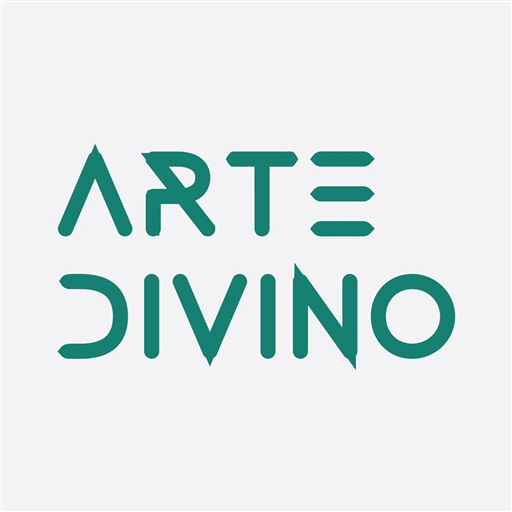

Arte Divino
Powered by FOOZIX Live — Mini ERP
فتح النظام — Open System الدخول متاح فقط بالبريد المسجل والنشط داخل النظام.
Powered by FOOZIX Live — Mini ERP
فتح النظام — Open System الدخول متاح فقط بالبريد المسجل والنشط داخل النظام.